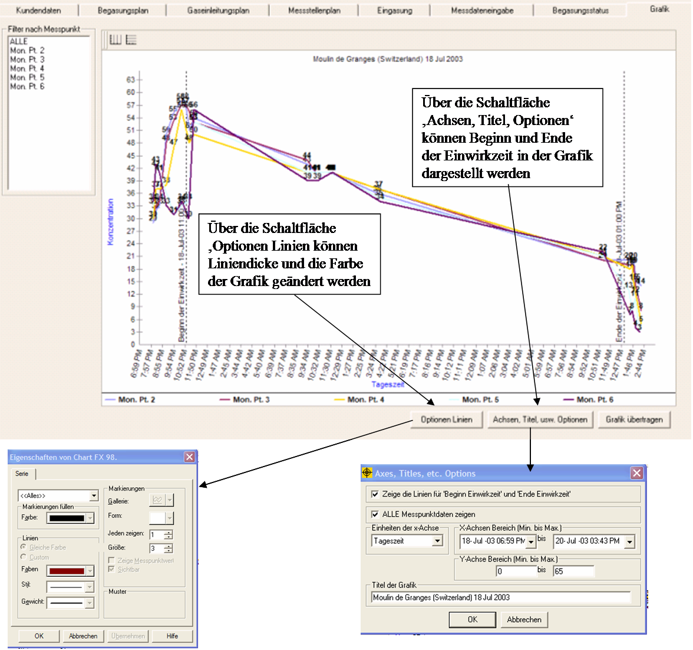
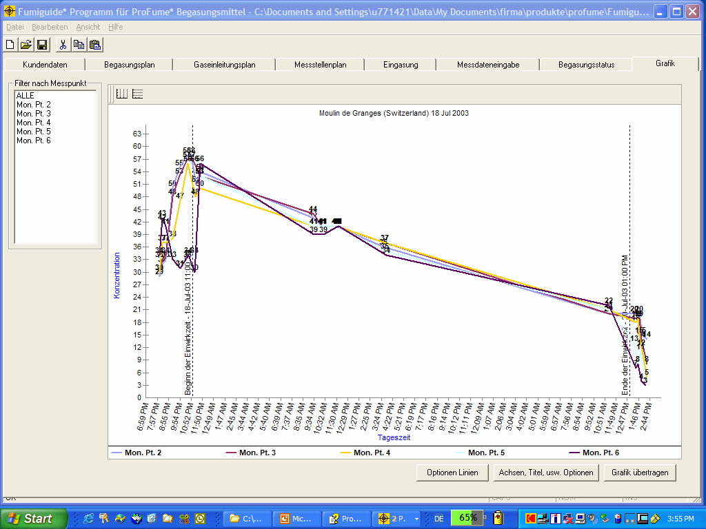

Grafik-Fenster
Im Grafik-Fenster kann der Anwender ein Diagramm der
ProFume-Konzentration (vertikale Achse) nach Einwirkzeit (horizontale Achse)
erstellen. Dabei kann der Anwender Beginn und Ende der Einwirkzeit, Uhr oder
Verstrichene Zeit einstellen. Andere Grafikdarstellungen sind z. B. die
Darstellung von Messpunkten nach Farbe, Typ, Leitungsgröße und
Punkt-Marker.
Das Fumiguide-Programm ist werksseitig auf die grafische
Darstellung aller Messdaten eingestellt. Die Daten im Gitternetz können
gefiltert werden, um einzelne oder alle Messpunkte auszuwählen.
Die
Grafik druckt Konzentration (y-Achse) gegen Zeit oder Verstrichene Zeit
(x-Achse). Die y-Achse ist auf einen Bereich von 0 bis zur maximalen
Anfangskonzentration unter den Bereichen innerhalb des jeweiligen Auftrags
eingestellt. Die x-Achse ist auf einen Bereich vom Beginn der Eingasung bis zum
Ende der Einwirkzeit eingestellt.
Hinweis: Die Änderung der Zeiten für
Beginn der Einwirkzeit oder Ende der Einwirkzeit im Grafikfenster hat keine
Auswirkungen auf die Berechnungen des Fumiguide-Programms in anderen Fenstern.
Zur Änderung der Einwirkzeit bei der Berechnung der Dosierung muss der Anwender
die Angaben unter Beginn Einwirkzeit oder Ende Einwirkzeit im
Messdateneingabe-Fenster oder im Begasungsstatus-Fenster entsprechend
ändern.

Der Anwender hat die Möglichkeit,
die Bereiche für x-Achse und y-Achse zu ändern. Außerdem hat der Anwender die
Möglichkeit, die Einheiten der x-Achse auf Tageszeit (20:35) oder
Verstrichene Zeit (16 Stunden) einzustellen. Ferner kann der Anwender die
gestrichelten senkrechten Linien, die Beginn der Einwirkzeit und Ende der
Einwirkzeit darstellen, wahlweise anzeigen oder ausblenden.
Die vom
Anwender eingestellten Linien Optionen (Eigenschaften) werden in der Datenbank
gespeichert. Bei diesen Eigenschaften handelt es sich um die Überschrift, die
Hintergrundfarbe der Grafik, die Einheiten für die x-Achse (Tageszeit oder
verstrichene Zeit), die Linienanzeige, den Bereich der x-Achse und den Bereich
der y-Achse.
Beim klicken der Grafik exportieren Schaltfläche exportiert der
ProFume Fumiguide die Grafik in ein neues MS-Word Dokument. Zusätzliche
Informationen bezüglich der exportierten Grafik können bei Bedarf auf der selben
Seite eingegeben werden. Wenn alle Eingaben / Bemerkungen abgeschlossen sind,
kann das MS-Word Dokument mit einer oder mehreren Grafiken in einem gewünschten
Verzeichnis des Computers gespeichert werden.

* Marke - Dow AgroSciences LLC